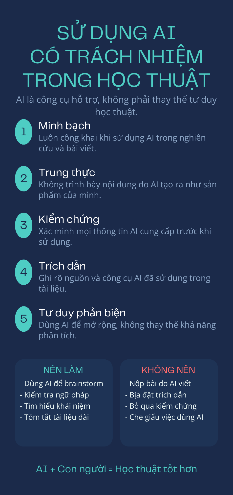

Sử dụng AI có trách nhiệm trong học tập và nghiên cứu
Chủ đề này giúp mình hiểu rõ cách sử dụng AI một cách có trách nhiệm trong học tập và nghiên cứu thông qua việc tìm hiểu các chính sách học thuật, thực hành sử dụng AI để hỗ trợ học tập, phân tích các vấn đề đạo đức cũng như xây dựng bộ nguyên tắc cá nhân khi khai thác AI trong môi trường đại học.
↓ Xem báo cáo PDF📖 Chính sách của HSB
Theo chính sách về tính trung thực học thuật của Trường Quản trị và Kinh doanh (HSB) – Đại học Quốc gia Hà Nội, người học cần sử dụng AI đúng mục đích, không làm ảnh hưởng đến việc đánh giá năng lực và phải chịu trách nhiệm đối với sản phẩm học tập của mình.
- ✔ Trung thực trong học tập và nghiên cứu.
- ✔ Không đạo văn hoặc sử dụng sản phẩm của người khác mà không ghi nguồn.
- ✔ Chịu trách nhiệm về tính chính xác của bài làm.
- ✔ AI chỉ đóng vai trò hỗ trợ, không thay thế năng lực người học.
💬 Prompt đã sử dụng
Trong bài thực hành, AI được sử dụng để hỗ trợ tổng hợp tài liệu cho môn Viết luận Đại học với chủ đề: "Would AI be a blessing or a curse"
Prompt
"Hãy tổng hợp tài liệu để hỗ trợ cho môn Viết luận Đại học về chủ đề 'Would AI be a blessing or a curse' và nhóm tôi đồng tình với quan điểm thứ hai."
📚 Kết quả AI
ChatGPT đã đề xuất nhiều tài liệu học thuật liên quan đến tác động của AI đối với tư duy, hành vi và quá trình học tập của con người.
| Tài liệu | Nội dung chính |
|---|---|
| Cheng et al. (2026) | AI có thể làm giảm ý định hành vi xã hội tích cực và làm tăng sự phụ thuộc vào AI. |
| Gerlich (2025) | Nghiên cứu ảnh hưởng của AI đến tư duy phản biện và xu hướng "cognitive offloading". |
| Kosmyna et al. (2025) | Đề cập hiện tượng Cognitive Debt khi sử dụng ChatGPT trong viết luận. |
Đánh giá và tích hợp đầu ra
- Đối chiếu với bài báo gốc.
- Ưu tiên các nguồn học thuật uy tín.
- Kiểm tra tính chính xác của thông tin.
- Chỉ sử dụng AI để hỗ trợ tìm tài liệu.
- Tự xây dựng lập luận và viết bài.
Qua quá trình này, AI đóng vai trò là công cụ hỗ trợ tìm kiếm, tổng hợp thông tin và gợi ý tài liệu, còn việc đánh giá, lựa chọn bằng chứng và xây dựng lập luận vẫn do người học thực hiện.
⚖️ Đạo đức AI trong học thuật
✔ AI được sử dụng hợp lý
- Gợi ý ý tưởng.
- Lập dàn ý.
- Giải thích khái niệm.
- Kiểm tra ngữ pháp.
- Hỗ trợ tìm từ học thuật.
✘ Gian lận học thuật
- Nộp nguyên văn nội dung AI.
- Không khai báo việc sử dụng AI.
- Dùng AI trong bài thi bị cấm.
- Để AI thực hiện toàn bộ lập luận.
📌 Quyền sở hữu trí tuệ
Khi sử dụng AI trong học tập và nghiên cứu, người học vẫn phải tuân thủ các quy định về bản quyền và trung thực học thuật. AI không phải là tác giả của các tài liệu học thuật, vì vậy mọi thông tin được AI cung cấp đều cần được kiểm chứng và trích dẫn từ nguồn gốc ban đầu.
- 📚 Luôn kiểm tra nguồn tài liệu gốc.
- 📝 Trích dẫn theo đúng chuẩn học thuật.
- 🔍 Không coi AI là nguồn tham khảo chính.
- ⚖️ Minh bạch khi AI được sử dụng để hỗ trợ.
- 💡 Chịu trách nhiệm với nội dung cuối cùng.
📈📉 Tác động của AI trong học tập
📈 Tác động tích cực
- Tiết kiệm thời gian tìm kiếm thông tin.
- Giải thích nhanh các khái niệm khó.
- Hỗ trợ học ngoại ngữ.
- Gợi ý ý tưởng và dàn ý.
- Cải thiện kỹ năng viết học thuật.
- Hỗ trợ lập kế hoạch học tập.
📉 Tác động tiêu cực
- Dễ phụ thuộc vào AI.
- Giảm khả năng tư duy phản biện.
- Nguy cơ đạo văn.
- Có thể xuất hiện thông tin sai.
- Giảm khả năng tự giải quyết vấn đề.
- Ảnh hưởng đến kỹ năng viết.
✅ Bộ nguyên tắc cá nhân khi sử dụng AI
Sau quá trình thực hành, mình xây dựng bộ nguyên tắc cá nhân để sử dụng AI một cách hiệu quả và có trách nhiệm trong học tập.
Chỉ sử dụng AI như một công cụ hỗ trợ học tập.
Luôn kiểm chứng mọi thông tin từ AI bằng nguồn đáng tin cậy.
Không sao chép nguyên văn nội dung do AI tạo ra.
Luôn ghi nhận và minh bạch khi AI hỗ trợ bài làm.
Tôn trọng bản quyền và quyền sở hữu trí tuệ.
Luôn chịu trách nhiệm với sản phẩm cuối cùng.
Phát triển tư duy độc lập thay vì phụ thuộc vào AI.
🖼️ Infographic
Infographic dưới đây tổng hợp các nguyên tắc sử dụng AI có trách nhiệm trong học tập và nghiên cứu, bao gồm tính trung thực học thuật, kiểm chứng thông tin, tôn trọng bản quyền và phát triển tư duy độc lập.

Hình 6.1. Infographic "Sử dụng AI có trách nhiệm trong học tập và nghiên cứu".
🎯 Kết luận
Qua bài thực hành này, mình nhận thấy AI là một công cụ mạnh mẽ có thể hỗ trợ hiệu quả trong học tập và nghiên cứu nếu được sử dụng đúng cách. AI giúp tiết kiệm thời gian, mở rộng khả năng tiếp cận nguồn tri thức và hỗ trợ phát triển kỹ năng học tập.
Tuy nhiên, AI không thể thay thế tư duy phản biện, khả năng sáng tạo và trách nhiệm học thuật của người học. Vì vậy, mỗi sinh viên cần kiểm chứng thông tin, tôn trọng bản quyền, minh bạch khi sử dụng AI và luôn chịu trách nhiệm với sản phẩm học tập của mình.
Trong tương lai, mình sẽ tiếp tục sử dụng AI như một người hỗ trợ thông minh, đồng thời không ngừng rèn luyện tư duy độc lập, khả năng nghiên cứu và đạo đức học thuật để phát triển bản thân một cách bền vững.